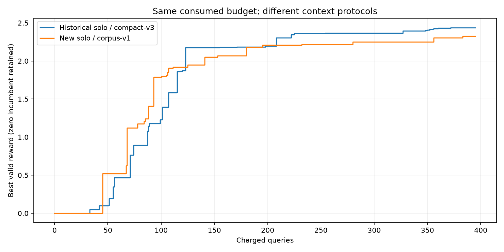

Run swarm-292bd96a0f944b1083b637e2b08633fe finished normally by choosing finish at 395/400 charged queries. This is the first completed condition of the new Kimi campaign; the three sharing conditions are still awaiting completed evidence.
Best reward: 2.3238. Modeled annual revenue: $3.290B; annual cost: $1.360B; net value: $1.929B. Runtime: 38.94 minutes. Recorded model cost: $4.7250 across 267 requests, 1,313,117 input tokens and 209,877 output tokens. No failed or unpriced requests were recorded. Charged queries and backend calls both equal 395; 2,736 cached service requests are separate from that count.

Against the historical solo endpoint at the same 395 queries, reward is 4.70% lower and recorded model cost 30.82% lower. Historical solo used $6.8301 and reached 2.4383. Input tokens fell 33.31%; output tokens fell 27.42%. These differences cannot be attributed solely to memory: this is one new search trajectory under compact-v3-corpus-v1, versus the historical compact-v3 protocol.
First positive plant appeared at 45 charged queries, 93.6 seconds and $0.1827 of recorded model usage. It explored 24 distinct column-path sets across all submissions. The winning plant has 13 design positions, including a double-effect specification at BT. Column positions are not physical column-unit counts.
There were 266 submissions: 243 valid, 21 invalid and two rejected. Exact duplicate designs accounted for 98 submissions (36.84%). The audit classifies 79 transitions as structural and 187 as local or unchanged topology; exact duplicates are a subset, not a third disjoint class. No source-design copies were recorded and sharing was disabled. Repeated own designs can be cache hits and need not consume new simulator calls, but still consume model decisions and context.
The audit records 28 best-valid improvements, including early improvements that remain negative. Do not equate that count with 28 improvements above the zero incumbent. Cross-agent diversity, contribution balance, sharing activation and peer-corpus influence are not applicable to this solo condition. Those measurements become informative when the sharing conditions complete.
At fixed output flows and costs, raising all qualification thresholds by 0.05 percentage points reduces annual net by 1.85%, from $1.929B to $1.894B. This is accounting sensitivity with fallback sale categories, not a probability of physical failure. The old solo loses zero at that increment, while the old shared swarm loses 29.62%.
Eight independent checks pass: submission/validity accounting, best reward, summed charged queries, summed recorded model cost, objective normalization, component closure, and repricing the saved streams back to original revenue. The task used for repricing is the frozen campaign task. Full trajectories remain in the retrieved run folder; compact summaries, audit and source manifest are preserved under corpus-evidence/single_baseline. The full analysis JSON includes the winning measured plant, sensitivity points and trajectory SHA256.
Archive SHA256 provided by the retrieval owner: 656b01a8c857854e63faa851e2360c81658b9fe96beff5beee004c45e34b5fb8. Frozen source bundle SHA256: 7f366b1dbc3a2cb7dc5b26d5222f861572695feb0b3c27a4732e109df346a444. This note is a completed-baseline analysis, not a conclusion about the unfinished campaign.